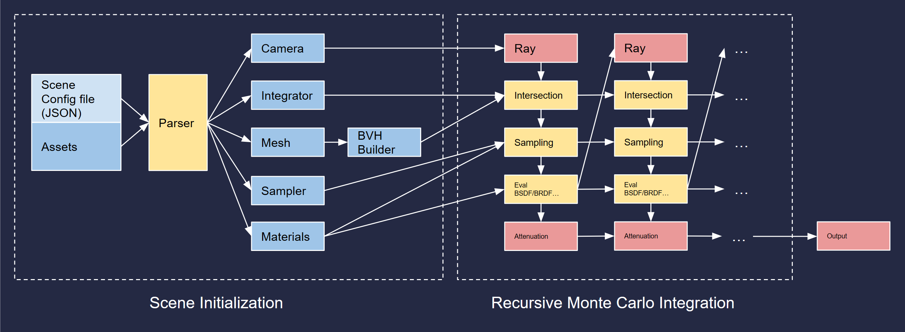

Ray Tracer in C++
Introduction

This is a semester-length project of 15668: Physics Based Rendering at CMU, where I implemented a custom ray-tracing renderer from scratch in C++ in Dartmouth Introductory Ray Tracer, a template for ray tracing education. In the final project I implemented advanced features from recent SIGGRAPH papers. Here is the full list of components I implemented.
- Ray properties and methods
- Transforms: translate, scale and rotation
- Objects: Sphere, Quads and Mesh (triangles) with corresponding properties: normal, uv...
- Materials and Microfacet BRDF Model: Lambert, Dielectric, Metal, Phong, Blinn-Phong, Oren-Nayar, Beckmann
- Sampler Algorithms: Stratified Sampling, Quasi-Monte Carlo Sampling
- Integrators: Material Integrators, next-event estimation, Multiple importance sampling
- Background Mapping
- Volumetric Rendering
- Procedural Textures
- Spectral Rendering
- Position-free Monte Carlo Integration for Layered Materials
- Position-free Monte Carlo Integration for BSSRDF
Feature Demo


Pipeline Architecture
Design and Implementation
Rays
The Ray class itself is the most simple part in a ray tracing pipeline, yet the core challenge of ray tracing is to study how rays behave in a scene. The Ray class contains four main properties: the origin (a point), the direct (a vector) as well as the min and max distances. More properties are added to support additional features, for example, the medium pointer points to a class representing volumetric materials such as fog or clouds, and the mono, wavelength properties indicate whether the ray is monochromatic to simulate laser, dispersion effects...
Transform
The Transform class is used across different types of data and there are two types of transforms that need to implement differently: the vector and the point;
To transform a vector, I implemented a linear transformation by matrix in the Euclidean space . However, transforming a point is different as the position itself will shift. To achieve it the transformation is done in homogenuous coordinates with a 4x4 matrix.
With the two basic functions I implemented transformation for rays, normals, meshes... I also implmented useful features such as inverse and so on.
Geometries
I implemented three types of Geometries: the sphere, the quad and the triangle (which is the basic component of meshes). For each geometry the key function is the ray-surface intersection, there are also additional features for different Geometries such as applying transformation, the UV mapping...Sphere
To calculate ray hit I used ray-sphere intersection algorithm as shown on the right. The corrsponding surface normal will then be the connecting vector from the center to the hit point. To get UV coordinates I transform Euclidean coordinates to Sphereical coordinates and use the corresponding parameters : phi and theta, to be the UV coordinates.
triangle
To achieve ray-triangle intersection I implemented the Möller-Trumbore test . To get the UV coordinates I transform the Euclidean coordinates to barycentric coordinates and get the UV from interpolating the alpha nad beta paramteres.
Materials and BRDF
Materials is a huge part and the most important part in ray tracing. There are two main parts: the specular behavior of material (such as reflection and refraction) and the BRDF (the microfacet structure, modelled by various mathmetical models such as blinn-phong). Other small but also important features are also implemented such as texture mapping ...Specular Behavior
Speculat behaviors mainly contains reflection and refractions, which are discribed in the Fresnel model. The model quantifies the effect that there are more reflection when the ray is more orthorgonal to the normal and more refraction when the ray is parallel to the normal.
BRDFs
I implemented various BRDF models including: Lambert, Phong, Blinn-Phong, Oren-Nayar and Beckmann. Each BRDF contains three function calls in the pipeline: the eval, the sample, and the pdf . The sample function samples the outgoing ray direction given the incoming ray, material type and other parameters (such as normal), the pdf call returns the probability density function and the eval returns the attenuation.
Sampling Functions and Samplers
Importance Sampling
The importance sampling method can significantly increase both speed and accuracy in a ray tracing pipeline. I implemented various importance sampling including: sampling the cosine term in the render equation (as shown in the image), sampling geometry and sampling brdf. The first image shows the sampling result of consine term, the second is the sampling of genmetry, which is used mostly in next event estimation. Sampling BRDF is implemented together within the material class mentioned above.
Stratified Sampling Quasi Monte_carlo Sampling Sampling
Those to sampling methods are, in essense, pseudo-random generators that proved to be able to generate better results than the randf() in C++. Here is a comparasion: (randf, i.e. independent sampling vs stri] vs quasi MC)


Integrator
Recursive ray tracing
The recursive ray tracing integrator is the most basic integrator. It evaluates the Render Equation by performing probablistic monte-carlo integration and simulate how light bounces in the scene. Each pixel will shoot a number of rays and accumulate color for the pixel. In the following sections I gradually added more advanced features to improve both speed and accuracy.
Next Event Estimation + MIS + Power Heuristic
NEE and MIS are commonly used together to reduce variance of rendered image. NEE is implemented by spliting the ray into two parts at every intersection. One is sampled based on the BRDF and the other is sampled over the lights. MIS, on the other hand, is the method of blending the two attenuations based on their PDF. Here are the comparasion among recular ray tracing, NEE only and NEE+MIS.

Volume
Volumetric Rendering renders things like smoke, fog, clouds..... I implemented Henyey-Greenstein Phase Function , Analytic Free-Flight Sampling and Transmittance, Delta Tracing and Ratio Tracking. This whole section is implemented based on the PBRT handbook . Anyways here are some results: isotropic fog, anisotropic smoke generated by perlin noises, and a cat made of volumetric materials: